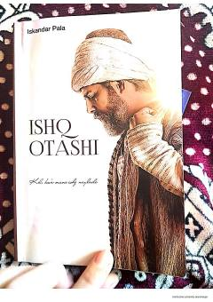

MQMulla Qosimning hayotiy tajribalari va ma'rifiy izlanishlari haqidagi ta'sirli asar.
Ushbu asar Mulla Qosim ismli shaxsning hayotiy tajribalari, ilm va hikmat o'rtasidagi farqni anglash jarayoni haqida hikoya qiladi. Muallif o'zining o'tmishdagi xatolari, diniy ilmlar va tasavvufga bo'lgan qarashlari hamda hayotiy falsafasi orqali kitobxonni chuqur mushohadaga chorlaydi.